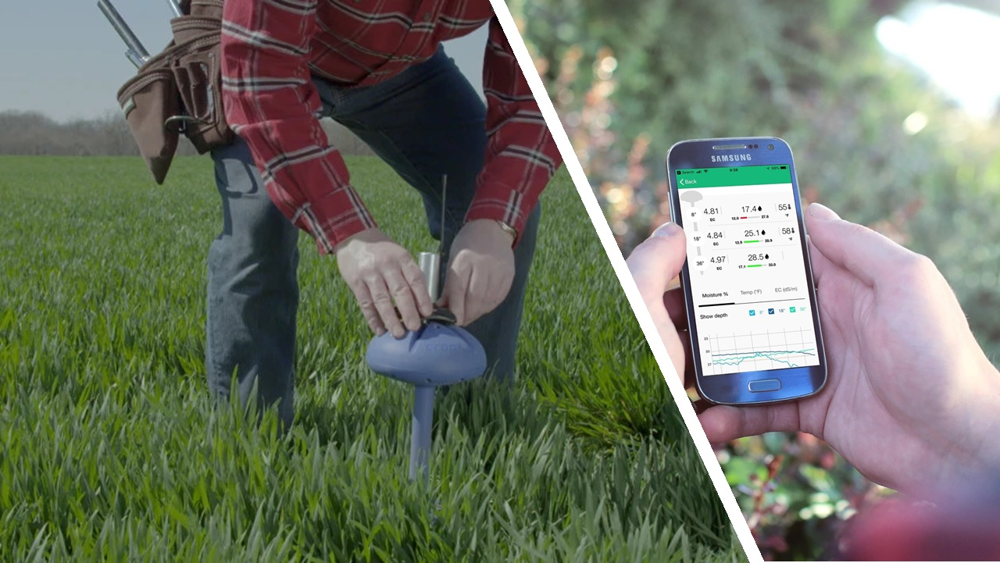
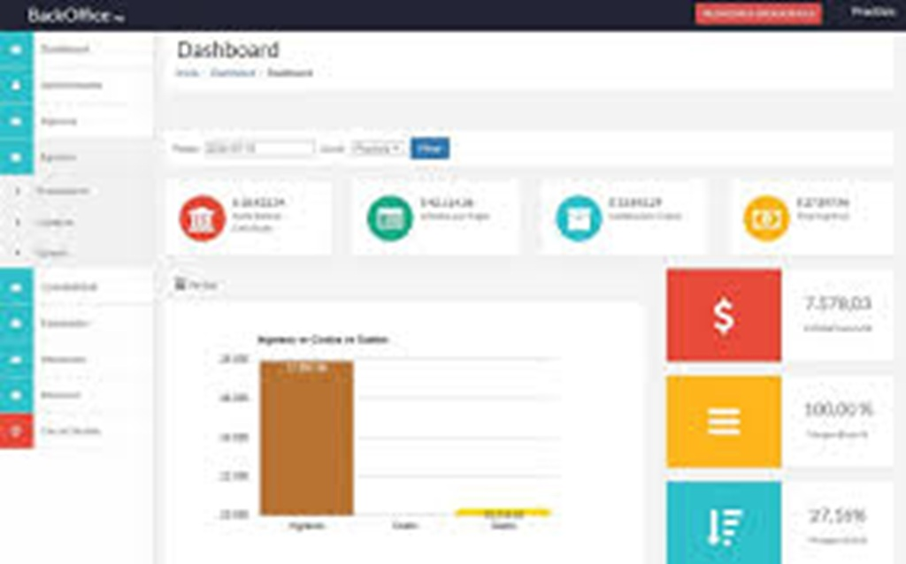

Perfil profesional futuro 10 años
En 10 años me visualizo como un profesional titulado en Tecnologías de la Información (ITIN), desempeñándome en el área de redes y telecomunicaciones. Me enfoco en la ciberseguridad, aportando soluciones seguras y eficientes en infraestructuras tecnológicas.
Metas académicas
- Finalizar la carrera de Tecnologías de la Información.
- Alcanzar un buen nivel de inglés técnico.
- Especializarme en redes y ciberseguridad.
Áreas tecnológicas de interés
- Redes y telecomunicaciones
- Ciberseguridad
- Automatización de sistemas
Habilidades por desarrollar
- Configuración avanzada de redes
- Seguridad informática
- Desarrollo de sistemas
- Comunicación y trabajo en equipo
Certificaciones o aprendizajes futuros
- Certificaciones en ciberseguridad
- Certificación en redes (ejemplo: CCNA)
- Cursos avanzados en tecnologías IT
Proyectos que espero construir

Sistema inteligente de monitoreo de suelo
Desarrollo de un sistema con sensores que permita medir humedad, pH y nutrientes del suelo. El sistema enviará datos y los veré en mi software para tomar las decisiones adecuadas.
Ver proyecto
Sistema contable automatizado en Python
Aplicación desarrollada en Python para gestionar ingresos, gastos y reportes financieros. Integrará automatización de cálculos y almacenamiento de datos para pequeñas empresas o fincas.
Ver proyecto
Sistema de monitoreo de red
Desarrollo de una solución para supervisar el estado de una red informática, detectando fallos, tráfico y dispositivos conectados. Permitirá mejorar la seguridad y el rendimiento en entornos empresariales o rurales.
Ver proyectoMi vida en 10 años
Rol profesional al que aspiro
Plan de mejora personal y académica
- Estudiar constantemente nuevas tecnologías.
- Practicar redes y ciberseguridad.
- Mejorar habilidades de comunicación.
- Mantener disciplina en el estudio y el deporte.